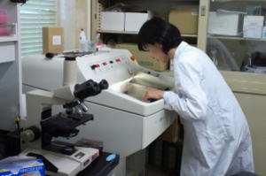
クリオスタットによる凍結切片作製
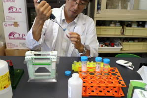
Western Blot法によるタンパク質解析
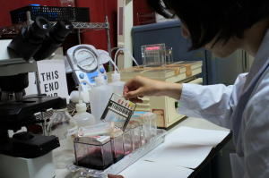
組織学的染色
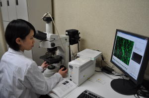
PCによる組織像解析
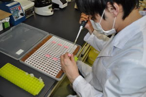
免疫組織化学的染色
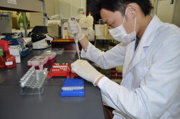
DNA抽出
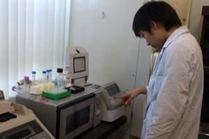
PCR法による遺伝子解析
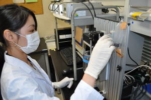
筋張力測定
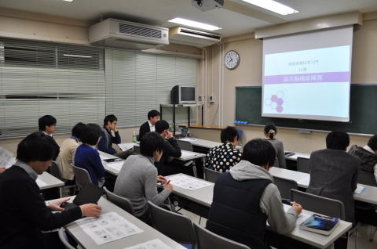
毎週水曜日のミーティング（20：00～）・リサーチプログレス（月1回） ・ミニレクチャー （月1回）・文献抄読会 （月1回） ・学会発表等の予演会 （随時）
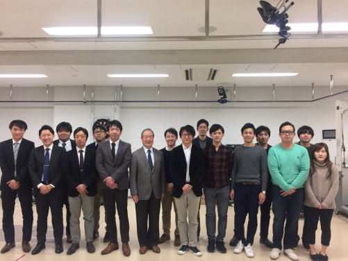
畿央大学大学院神経リハビリテーション学研究室との合同研修会が開催されました．長崎大学からは5名が参加し，これまでの研究成果と今後の展望を報告して頂きました．
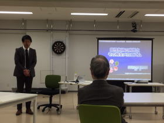
沖田教授が「筋性拘縮とその発生メカニズム」についてご講演されました．
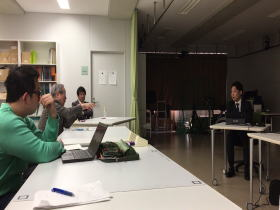
発表内容について金子教授と活発なディスカッションを行う本田君．
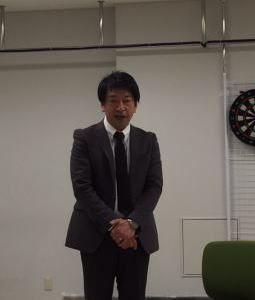
沖田教授に研究室を紹介していただきました．
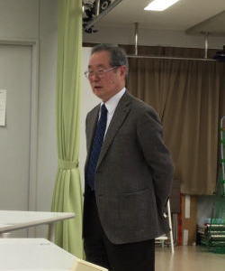
畿央大学の金子章道教授から総評を頂きました．貴重な御指摘ありがとうございました．
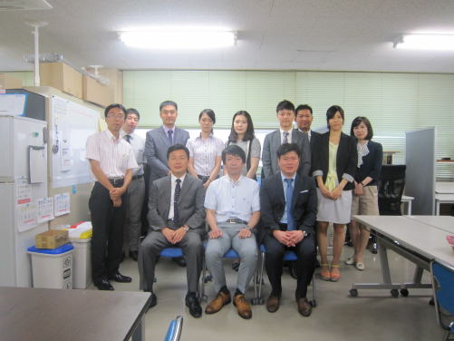
釜山カトリック大学校と長崎大学大学院の国際学術交流会が，今年は長崎で開催されました．釜山カトリック大学校から，教員2名，大学院生4名が来崎され，交流を深めました．
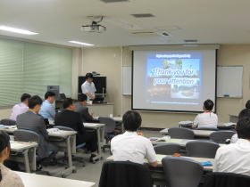
沖田教授が「New frontiers of physical therapy for musculoskeletal pain in Japan」についてご講話されました．
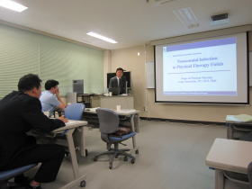
釜山カトリック大学校の金教授が「Nosocomial Infection in Physical Therapy Fields」についてご講話されました ．
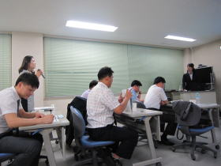
大学院生の発表も行われ，活発なディスカッションの場となりました．
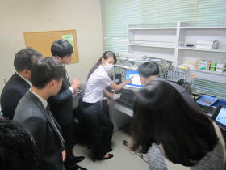
本研究室の田中さんが他動張力測定のデモを行いました．
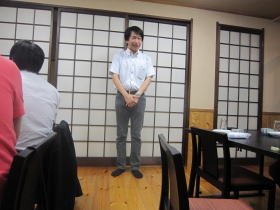
夜の懇親会にて開会の挨拶をされる沖田教授．
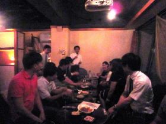
懇親会はとても盛り上がり，夜遅くまで行われました．
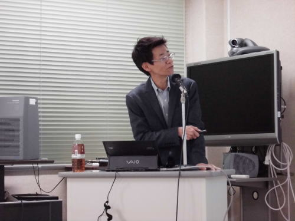
松原貴子先生が特別講演「Exercise-induced hypoalgesiaの効果とそのメカニズム」をご講話されました．本研究室からも多くのメンバーが参加し，大変興味深く，貴重なお話を聞かせて頂きました．
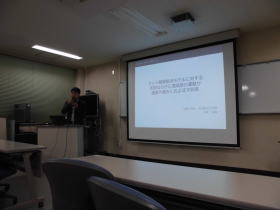
シンポジウムとして本研究室の坂本准教授が「ラット膝関節炎モデルに対する患部ならびに遠隔部の運動が腫脹や痛みにおよぼす影響」について発表されました.
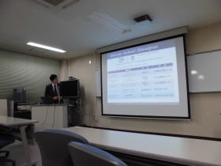
本研究室の濱上君が「ラット足関節不動モデルに対する不動部以外の運動が痛みにおよぼす影響」について発表を行いました．
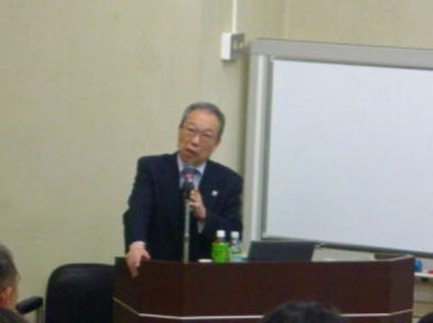
太田仁史先生が特別講演「介護・終末期リハ/ケアの必要性と活動の展開のために」をご講話され，大変貴重なお話を聞かせて頂きました．
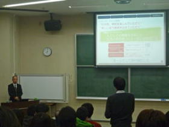
本研究室と共同研究を行っている青梅慶友病院の福田卓民先生が，実践報告として「青梅慶友病院におけるチームアプローチとしての拘縮対策」についてご講話されました.
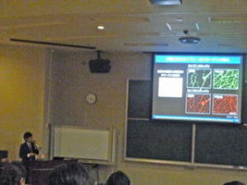
ミニレクチャーとして，本研究室の本田君が「拘縮の基礎」について講演を行いました．
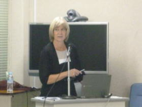
大学院セミナーとして「Inspiratory Muscle Injury - Evidence and Clinical Markers」について講演会が開催されました．本研究室から多数のメンバーが参加させて頂きました．
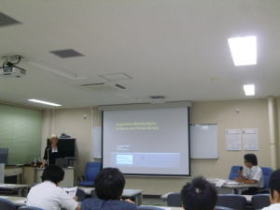
大学院セミナーとして「Inspiratory Muscle Injury - Evidence and Clinical Markers」について講演会が開催されました．本研究室から多数のメンバーが参加させて頂きました．
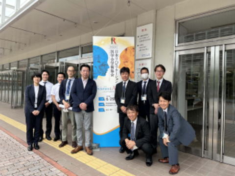
第60回日本リハビリテーション医学会学術集会に本研究室のメンバーが参加してきました. 本研究室から口述4演題，沖田先生，片岡先生が共同研究を行っている青梅慶友病院から口述1演題の発表を行いました．
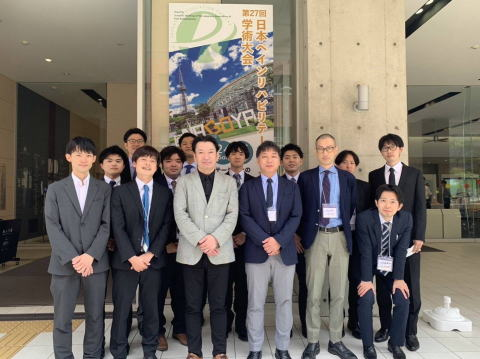
第27回ペインリハビリテーション学会学術大会に本研究室のメンバーが参加してきました. 坂本准教授がファイザー社の企画講演，片岡先生が教育講演，西先生がシンポジウムにてご講演されました．また，本研究室から口述9演題，ポスター1演題の発表を行いました．
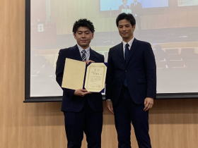
大会長の井上雅之先生から最優秀賞の表彰を受ける沖田星馬君．
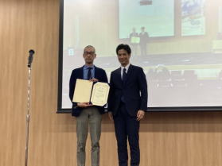
大会長の井上雅之先生から奨励賞の表彰を受ける片岡先生．
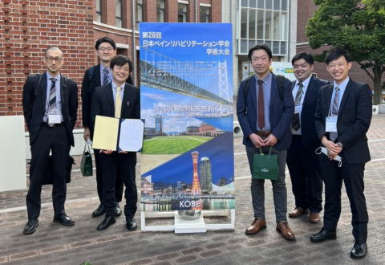
第26回ペインリハビリテーション学会学術大会に本研究室のメンバーが参加してきました. 坂本准教授が教育講演にてご講演されました．また，本研究室から口述12演題の発表を行いました．
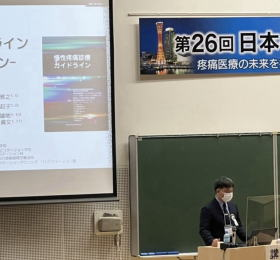
教育講演にてご講演される坂本准教授．
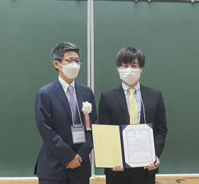
大会長の松原貴子先生から優秀賞の表彰を受ける後藤先生．
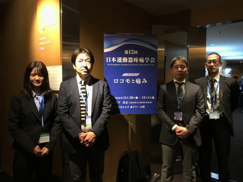
第12回日本運動器疼痛学会に本研究室のメンバーが参加してきました. 沖田教授が教育研修講演の座長をされ，坂本准教授，片岡先生と研究室メンバーが口述演題の発表を行いました．
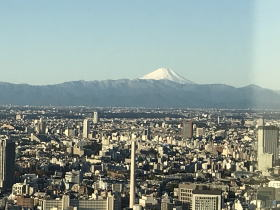
学会は六本木ヒルズ森タワーの49階で行われ，会場からは富士山が見えました．
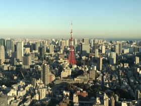
同じく会場から見える東京タワー．
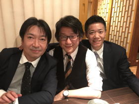
懇親会で談笑する沖田教授，森岡教授，松原教授（左から）．
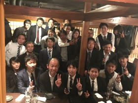
松原研究室，森岡研究室と3研究室での懇親会が開催され，貴重な情報交換を行うことができました．
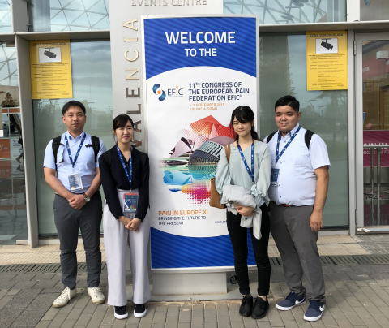
第11回欧州疼痛学会に本研究室のメンバーが参加してきました. 坂本准教授と研究室メンバーがポスター4演題の発表を行いました.
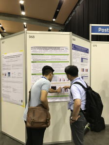
研究内容について質問に答える坂本准教授．
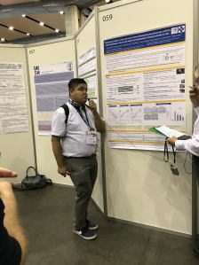
研究内容について説明する佐々木君．
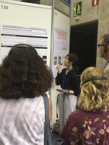
これまでの研究成果を発表した石川さん．
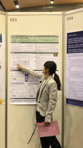
研究内容を説明する竹下さん．
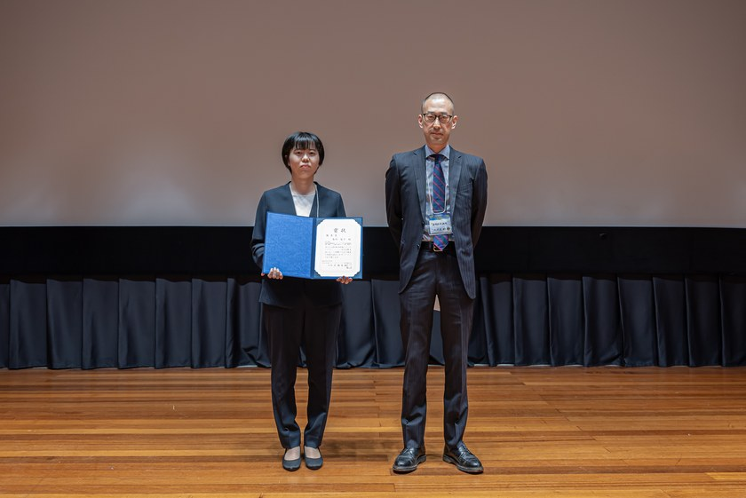
元川さん
片岡さん
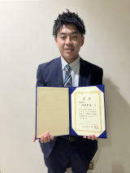
清間さん
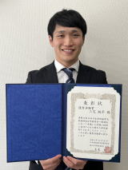
三宅さん
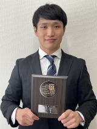
三宅さん — 長崎大学
後藤さん
本田さん
元川さん
佐々木さん — 第10回日本筋骨格系理学療法学会
佐々木さん — 第2回日本バイオメカニクス応用理学療法学会
梶原さん — 第7回BSES研究会
片岡さん — 第25回日本ペインリハビリテーション学会
本田さん
本田さん — 第5回BSES研究会
大賀さん — 第23回日本ペインリハビリテーション学会
中林さん — 日本理学療法士連盟
田中さん — 長崎大学
片岡さん — 第4回BSES研究会
佐々木さん — 第22回日本ペインリハビリテーション学会
佐々木さん — 長崎大学
河内さん — 長崎大学
河内さん — 日本理学療法士連盟誌 Vol.18
後藤さん — 第50回日本理学療法士学術大会
本田さん — 第47回日本運動・バイオメカニクス学会
中野さん — 第20回日本脊髄障害医学会
寺中さん — 第20回日本ペインリハビリテーション学会
仲願寺さん — 長崎大学
坂本さん — 理学療法サイエンス
寺中さん — Pain Research
吉村さん — 第49回日本理学療法士学術大会
浜上さん・仲願寺さん
吉田さん — 理学療法サイエンス
笹部さん — 長崎大学
関野さん — 学術集会
関野さん — 長崎大学
関野さん・吉野さん — 第47回日本理学療法士学術大会
関野さん
本年度より教授に就任された坂本教授の教授就任記念祝賀会が開催されました．
ご来賓の先生方との記念撮影会．坂本教授夫妻（中央）．
大分大学福祉健康科学部 理学療法コース 川上敬介教授からの御祝辞．
神戸学院大学総合リハビリテーション学部 理学療法学科 松原貴子教授からの御祝辞．
多くの祝花に彩られ，華やかな会場となりました．
本締めのご挨拶をされる沖田教授．
本年度は，新型コロナウイルスの感染対策をしたうえで卒業式が行われました．本研究室室からは修士課程1名，学部生5名の方々が卒業されました．
沖田教授，坂本准教授と修士課程を修了された野元君（中央）．
沖田教授，本田助教とゼミ生の石木君，孝橋さん（左から）．
折口教授とゼミ生の平本さん．
坂本准教授とゼミ生の小川君，福山さん（左から）
研究室の先生方とゼミ生で集合写真を撮りました．
本年度で研究室を卒業される方々のセレモニーと４月からカナダのブリティッシュコロンビア大学へ留学される本田助教の壮行会が行われました．
本年度は，新型コロナウイルスの感染対策をしたうえで卒業式が行われました．本研究室室からは修士課程3名，学部生6名の方々が卒業されました．
沖田教授，本田助教と修士課程を修了された吉村さん（中央）．
坂本准教授と修士課程を修了された本川さん，宮原君（左から）．
沖田教授とゼミ生の前田君，三宅君（左から）．
折口教授とゼミ生の村上さん，笹原さん（左から）．
坂本准教授とゼミ生の吉梅さん，江島さん（左から）．
本年度で研究室を卒業される方々のセレモニーが行われました．
本年度は，新型コロナウイルスの感染対策をしたうえで卒業式が行われました．本研究室室からは博士課程1名，修士課程3名，学部生8名の方々が卒業されました．
佐々木君が博士課程を卒業されました．今後は本研究室の客員研究員として研究を続けられます．
沖田教授，坂本准教授と修士課程を修了された坂本君，盛田さん，中川君（左から）．
沖田教授，本田助教とゼミ生の稲富君，平島君，江崎さん（左から）．
折口教授とゼミ生の神宮さん，真栄城さん（左から，古庄さんは欠席されました．）
坂本准教授とゼミ生の菅君，土橋さん（左から）．
本年度で研究室を卒業される方々，栄転される方々のセレモニーが行われました．
沖田教授と田中さん，大賀君（左から）． R3年度より田中さんは聖隷クリストファー大学の助教に，大賀君は神戸学院大学の助教に着任されます．
沖田教授と本研究室を卒業される研究協力員の村田さんと石川さん（左から）.
修士課程を修了する坂本君，盛田さん，中川君，博士課程を修了する佐々木君（左から）．坂本君と中川君は博士課程に進学し，盛田さんは研究協力員，佐々木君は客員研究員として本研究室で研究を続けられます．
沖田教授から卒業および栄転される方々に向けて温かいお言葉を頂きました．
坂本准教授が栄転される方々へ激励のご挨拶をされました．
R2年度より，関西医科大学に新設予定のリハビリテーション学部（設置準備室）の教授に着任される中野准教授の壮行会が行われました．
本研究室から，中野准教授へ激励の意を込めて記念品が贈られました.
中野准教授から，研究室への記念品を寄贈していただきました。
令和1年度研究室忘年会が開催され，研究室メンバーと学部ゼミ生合わせて29名にご参加いただきました．
沖田教授が，研究室の1年間の総括を述べられ，乾杯のご挨拶をされました．
研究室のメンバーに激励の意を込めて，折口教授がご挨拶されました.
坂本准教授が，今年の振り返りと来年に向けての激励の言葉を述べられました.
沖田教授を囲み談笑する，研究室メンバーの梶原君，大賀君，佐々木君と，ゼミ生の吉村さん，平島くん（左から）．
忘年会は三次会のカラオケまで盛り上がり，非常に有意義な時間となりました．
学部ゼミ3年生の歓迎会を兼ねたゼミ旅行が行われました．
沖田教授が，研究室としての今年度上半期の総括と学部ゼミ3年生への歓迎の言葉を述べられました．
研究室メンバーとゼミ生に下半期の研究活動への激励の意を込めてご挨拶される坂本准教授．
レクレーションとしてボーリング大会が開催され，大いに盛り上がりました．
沖田教授からボーリング大会で優勝した友岡君，近藤君（左から）に優勝賞品をお渡しいただきました．
同じく2位に入賞した大賀君，神宮さん（左から）は坂本准教授から賞品をいただきました．
同じく3位に入賞した宮原君，平島君（左から）は片岡先生から賞品をいただきました.
同じくブービー賞となった町田君，吉田さん（左から）には近藤君，本田君，後藤君から賞品が贈られました．
新たにゼミ生となった学部3年生7名（上段左から管君，江崎さん，神宮さん，平島君，下段左から土橋さん，古庄さん，真栄城さん）.